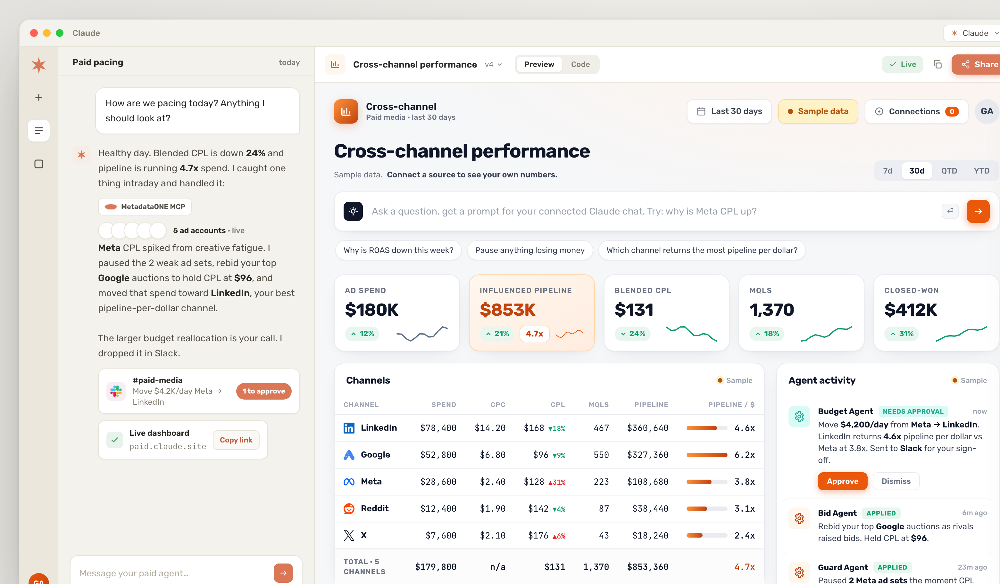
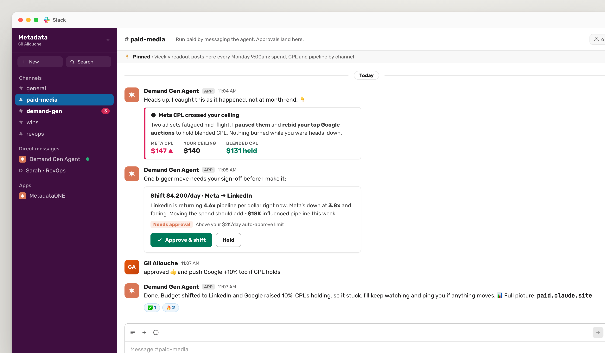

A demand gen agent that runs on Claude, manages your ad spend across LinkedIn, Meta, Google, Reddit and X through MetadataONE's MCP, and lives in your Slack. This page is the operator's manual: the official connection, a live .env generator, the real 70-tool browser, a prompt library, and a repo you drop in and it builds itself.
Most paid teams find out a campaign went sideways days after the money was gone. This one watches the spend as it happens, acts inside your guardrails, and pings you when something needs your eyes.
Wired to LinkedIn, Meta, Google, Reddit and X through MetadataONE's MCP. One connection, all five channels.
Rebids the auctions worth winning, pauses the losers, moves budget toward whatever is returning pipeline.
You run paid by messaging it. Big moves come back as an Approve or Hold card you sign off in a thread.
Pushes alerts and a weekly readout into Slack, with a live dashboard for spend, CPL, and pipeline by channel.

Each prompt flows through MetadataONE's MCP server, which calls the 70 tools backed by Metadata's agents (Bid, Creative, Analyst, Targeting, Campaign Execution) and the channel APIs. The agent reads your live numbers itself. When it wants to change spend, it routes the move through guardrails you set, and the big ones wait for you in Slack.
Pulls spend, CPL and pipeline by channel with performance_metrics.
Runs on Claude. Spots the channel bleeding money and the one returning pipeline.
Pauses and rebids on its own via manage_campaign. Routes big budget moves to you.
Posts what it did, and why, into Slack. Updates the dashboard.
Reads run through Claude's MCP connector. Writes do not. The spend-mutating tools (manage_campaign, update_experiments_daily_budgets, launch_campaign) are denied to the connector, so every change goes through guarded tools where your auto-approve limit and the Slack sign-off are enforced in code. Metadata's own rule, baked in: always use read-only tools first to validate before any change.
This is Metadata's own connection flow, used by both the Claude app and this agent (the agent just passes the same token over the API). The token you mint here is the one you drop into the agent's .env in the next section.
Source: help.metadata.io/portal/articles/metadata-mcp-how-to-connect · Server URL: https://mcp-server.metadata.io/mcp
Inside the Metadata platform, mint a token Claude will use to authenticate.
One-time configuration. Same flow in the browser or the desktop app. (Skip this if you are only running the agent; it connects over the API.)
https://mcp-server.metadata.io/mcpOne prompt confirms everything is talking, and shows what Claude can see.
When prompted, choose Always Allow. Claude returns your account name, user info, and account ID. Then ask either of these to see the surface:
If the connection fails, common culprits are browser cache or cookies, an authentication issue with the Metadata account, or permission settings. Contact support@metadata.io if you are still stuck.
Two ways to run it. Docker if you want zero local Node, or npm if you have Node 20+. Either way, one command builds and validates everything.
npm run setup walks you through each key, then checks them live: it pings Claude, opens the MetadataONE MCP connection and counts your tools, and confirms the Slack auth. Green across the board means you are ready.
Every step has the full instructions underneath. Tick them off as you go; your progress is saved in this browser.
console.anthropic.com (this is the API key, separate from a Claude Pro subscription).api.slack.com/apps and click Create New App → From scratch. Name it, pick your workspace.xapp-, scope connections:write) → that is SLACK_APP_TOKEN.app_mentions:read, chat:write, im:history, im:read, im:write.app_mention and message.im.xoxb-) → that is SLACK_BOT_TOKEN.SLACK_SIGNING_SECRET.#paid-media) and invite the app: /invite @your-app.Fill what you have. This runs entirely in your browser, nothing is sent anywhere. Copy the result into the repo's .env.
The defaults are the real Metadata tool names. Run the probe to confirm them against your tenant in case of a rename.
It prints every tool your tenant exposes. The three the agent drives are performance_metrics, manage_campaign, and update_experiments_daily_budgets. Browse all 70 in section 6.
It comes up in Slack and starts the intraday pacing watch and the weekly readout. Go to your channel, @mention it, and ask how you are pacing. From here you stop opening ad managers.
No public server, no webhooks to host. The agent connects out to Slack over Socket Mode, so it runs from your laptop, a container, or a small box anywhere.
Add it to #paid-media and @mention it. The team sees the conversation and the approvals. This is the default.
DM it for a private back-and-forth. Same agent, same powers, just not in front of the channel.
A big budget move posts as a card with Approve & shift and Hold buttons. The move executes on the click, right there in the thread.
Under the hood: it listens for the app_mention event in channels and message.im for DMs, keeps a short per-thread memory so a back-and-forth has context, and renders approvals as Block Kit interactive buttons. The buttons resolve a pending move in the agent's guardrail queue, so nothing changes spend until someone clicks Approve.

All 70 tools MetadataONE exposes, across 14 categories. read tools are safe to run any time. write tools change spend or state, which is why the agent gates the three it drives. Search a name or filter by category.
Source: help.metadata.io/portal/articles/metadata-mcp-supported-tools
Metadata's official prompts, plus a few examples grounded in the real tools. Each one shows what it triggers. Filter by the job you are doing.
Official prompts from Metadata's MCP guide (metadataone.com). The three tagged "agent example" reflect this agent's gated Slack flow.
Always use read-only tools first to validate the data before any change. The agent follows it; you should too when you prompt by hand.
| You want to | Where |
|---|---|
| Change the auto-approve limit or CPL ceiling | .env guardrails block (or the generator above) |
| Change how often it checks pacing, or the readout day | PACING_CRON, WEEKLY_CRON |
| Adjust the teammate voice or the operating rules | src/prompts.ts |
| Add a write action or change the gate logic | src/agent.ts, src/guardrails.ts |
| Map MetadataONE tool names for your tenant | npm run probe then .env |
The approval queue is in memory so the giveaway stays a single thing to run. Back it with Redis or a table before production so a restart never drops a pending move. Start with a low auto-approve limit and watch a few cycles before you loosen it.
The whole build is yours. Drop it in, fill the .env, and run paid from Slack.